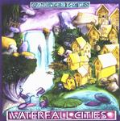

Home Artist links Label link

Ozric Tentacles - Waterfall Cities
| Artist: | Ozric Tentacles |
| Title: | Waterfall Cities |
| Label: | Stretchy Records Strechycd1 |
| Length(s): | 58 minutes |
| Year(s) of release: | 1999 |
| Month of review: | [01/2002] |
Line up
Ed - guitars, synths, tendril manipulations
Seaweed - synths, whoopz, fizzles
Zia - bass & snapiness
John - flutes & twirlings
Rad - drum poundings
Tracks
| 1) | Coily | 7.22
|
| 2) | Xingu | 7.28
|
| 3) | Waterfall City | 11.03
|
| 4) | Ch'ai? | 5.04
|
| 5) | Spiralmind | 11.40
|
| 6) | Sultana Detrii | 9.18
|
| 7) | Aura Borealis | 5.40
|
Summary
The good thing about Ozric Tentacles (OT) is that their style is very recognizable. The bad thing is that same recognizability: due to their music being based far more on a style, or even vibe, tracks tend to be sort of
similar. Their style I associate with words like organic, bubbly and most of all trippy. They themselves think of
this album as 'colourful worlds' and 'instrumental pathways' which can bring you into 'a state of blissful
otherness'.
The music
Coily immediately shows you all style elements OT are known for, a driving, whirly and trippy sound (I know this
must sound pretty bubbly in itself, but can you help it with this kind of stuff?)
Xingu is a bit more laid back, a throbbing bass with carpets of keyboard lines laid across, later on joined by
some rhythmics as well. Not to offensive, but then again, not all that interesting either.
The first minute and a half of Waterfall city sound to me like a synth based (as opposed to guitar based) version
of Rush's La villa strangiato. After then it branches off into another of those twirly up tempo tracks, to end
in several minutes of mid tempo erm that doesn't appear to be about anything.
Ch'ai, as its title suggests, has some clear Chinese influences. After the preambles, the guitars are brought out,
as well as a keyboard sound which somewhat reminds me of the frogs in Paul McCartney's We all stand together (but
that could be me).
Spiralmind bubbles off, with some guitar strumming interposed. A pretty nice and fluent track, once again, but it
does seem to go on forever.
Sultana detrii starts off with some four minutes of reggae/dub drub, the way you can hear on the first UB40 album. Not nice. After this though it slowly evolves into the most driven whirling to be heard on this album. A
track to have me in two minds, since it holds the bits I like least and most.
Aura borealis is yet another of those fluent trippy tracks.
Conclusion
OT are a band associated with herbal stimulants pretty often. When you listen to their music, you can't help
thinking of that. Their music is definitely in the realm of psychedelica, but would probably just as well be
appreciated by members of the dance scene who like trance music. I'm in two minds about this particular installment.
The first time I played it I was pleasantly surprised, but on the second and third listens found that it clearly is OT, more than it is an album in its own right. It's okay music, but better suit for background music, than for
having a good listen to by itself. Without wanting to suggest you into something, I can't help feeling that this
music is not all that interesting when listening to it in a sober state. Waterfall Cities is a nice listen, but far
from essential.
© Roberto Lambooy